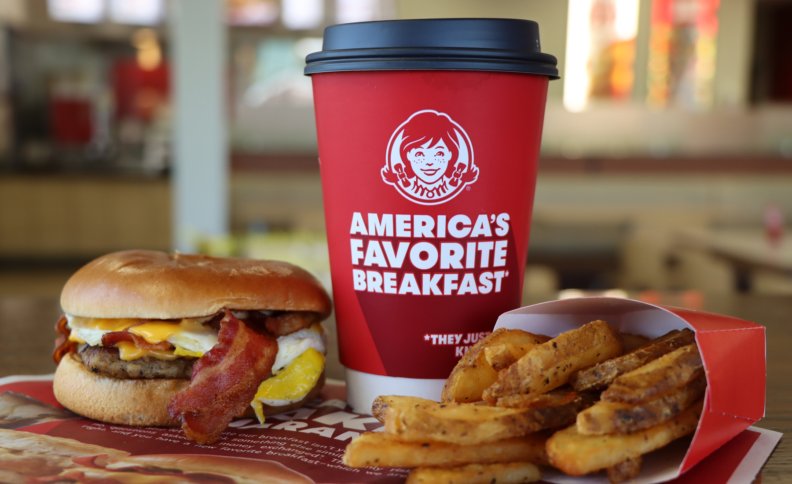
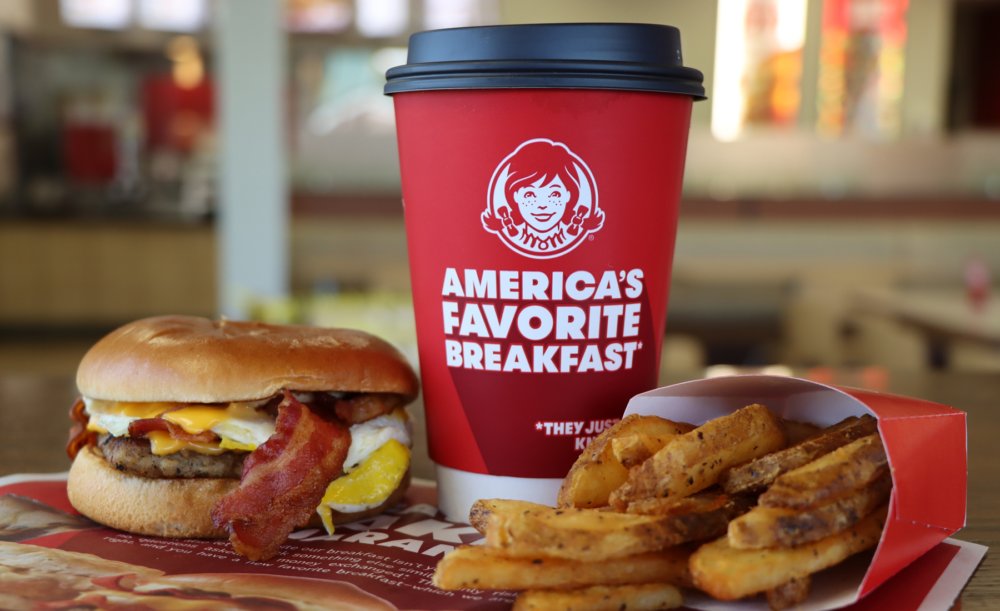
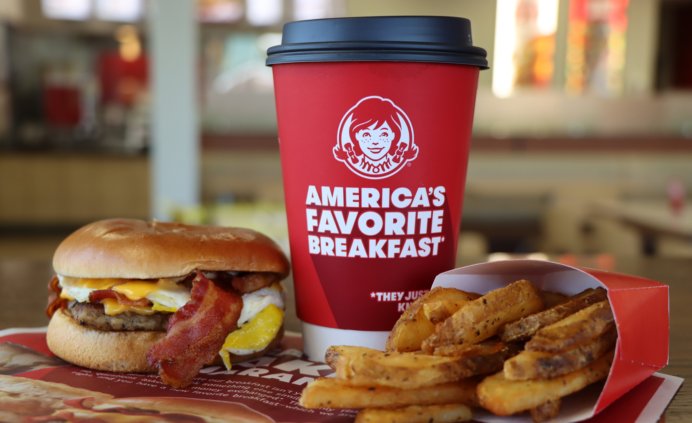
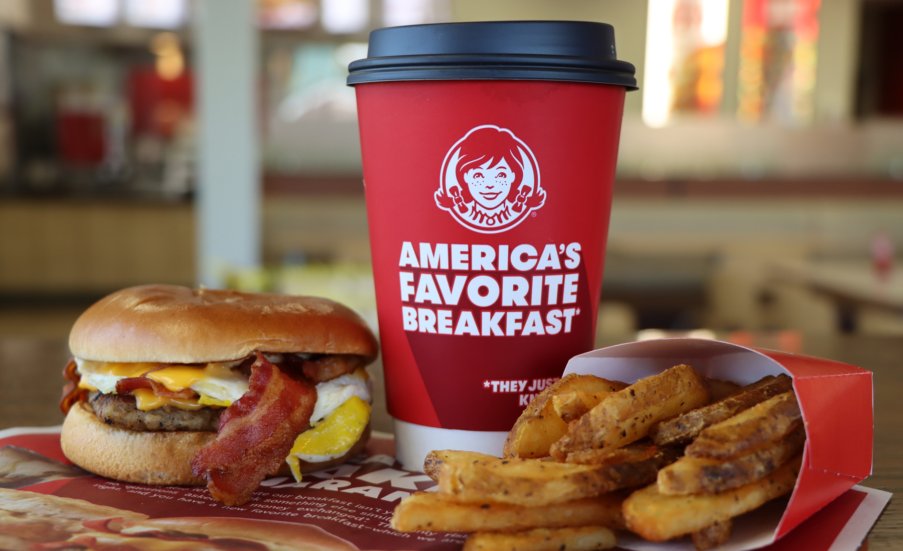

At Wendy's, we're all about serving up fresh food, even if it means going the extra mile. When you walk through our doors, we do what we can to make everyone feel at home because our family extends through your community.
Quality food can't be made without quality leadership. Learn about the people leading The Wendy's Company.
We live by a certain set of values and we run Wendy's according to a certain set of values. It's what makes us who we are: our values keep our vision in line with the future. Don't believe us? You can check out The Wendy's Company Corporate Governance Guidelines right here. How's that for transparency?
Dave Thomas opened the first Wendy’s restaurant with an unwavering commitment to serve fresh food, at a fair price, in a comfortable atmosphere. He founded Wendy’s on the premise that Quality Is Our Recipe®, and the quality our customers expect from every restaurant visit begins long before products and ingredients reach the kitchen. More than 50 years later, we remain committed to the values Dave taught us, and we believe that doing the right thing – for our people, our customers and our planet – is the only responsible way to do business.
HISTORY
The Wendy’s Story
First of all, yes, Wendy is a real person. And a pretty special one, being the daughter of our founder Dave Thomas. Today, she is one of the most involved and successful franchise owners in the Wendy’s enterprise. We think Dave would be proud. Back in 1969, he looked around at all other hamburger joints and was like, “Nah. People deserve better.” At the time, other quick-service restaurants were using frozen beef and mass-producing food. Not Dave. His approach of serving fresh, made-to-order hamburgers changed the game. And his can’t-stop-won’t-stop commitment to making customers happy drives everything we do today.